1 Earth Economy Modeling
1.1 Overview
What is Earth-Economy modeling?
How does this relate to big data
Example research topics that use big data
How does this connect to econometrics?
Big data examples from my research
Speaker notes go here.
1.2 To succeed in using this book
Necessary to succeed: mastering software and code.
Applied Economics itself is shifting in this direction.
More focus on code expertise.
Distinguishes us (in a very positive way) from traditional Econ programs.
In this book, we will use both R and Python
R is dominant in applied econometrics (and thus is the basis of our department’s coding approach)
Other disciplines (including machine learning) use R much less
In your career, you will likely have to learn new coding languages.
- Let’s become bilingual!
I will lead the Python-specific component of the course
- Will walk you through installation, language basics etc., and then use it apply machine-learning models to big data
1.3 Your computer
This course will build a modern “scientific computing stack” that is emerging among leading academics and open-source practitioners as an extremly powerful tool. We will work through installation of the programming language and several supporting tools.
It is possible to use a PC, Mac or Linux for this course, though all examples will be given on a PC. Becoming skilled in Big Data is partly about mastering the tools and it will be your responsibility to come to class with your computer setup in a way for you to succeed. We will discuss any setup steps necessary in the lecture before it is to be used.
1.4 What is big data?
1.4.1 Big data means many things to different groups
Standard definition: Data sets that are so large or complex that traditional data processing applications are inadequate
Streams of data (e.g., video collected by a self-driving car)
Massive consumer data (they are watching you)
Remotely sensed data (satellites or drones taking pictures of the earth)
Traditional data, but just really big.
Many related subfields also constitute “what is” big data.
Machine learning (core to this course)
Artificial Intelligence (AI)
Technological advancement in computer science and hardware
Econometrics exactly as we’ve done before, but just with bigger tables.
1.5 Why should economists care about “big data”?
In the very least, it can create many new sources of useful data.
1.5.1 Voice Analysis

Our input is time-series of amplitude of different pitches
But to be useful data, we probably want to know what is the MEANING? Here there are useful methods in Natural Language Processing.
1.6 Image Analysis
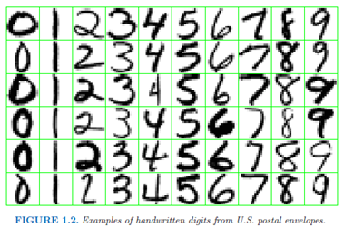
Categorization
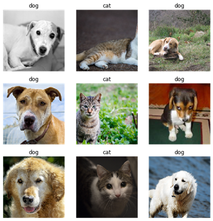
Even image generation
1.7 Sentiment Analysis
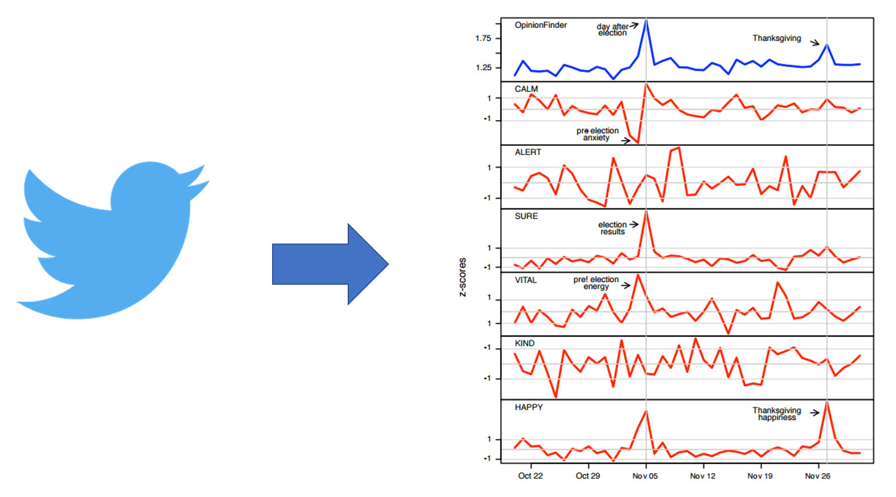
1.8 Big data from remote sensing (satellites)
Creates terabytes of information per day
Can assess economic factor like poverty
Or environmental factors like freshwater availability
Data types:
Raster data (matrices of spatial values)
Vector data (link databases of survey data to georeferenced household locations)
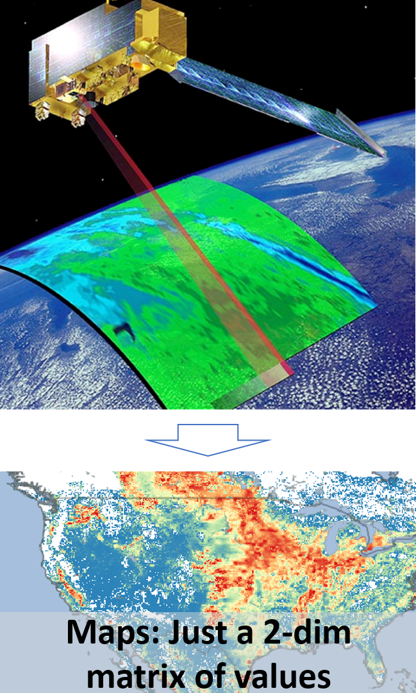
1.9 NLCD
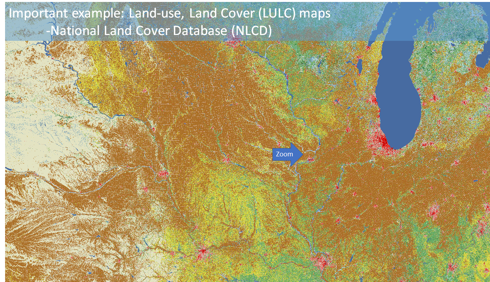
1.10 NLCD Zoomed
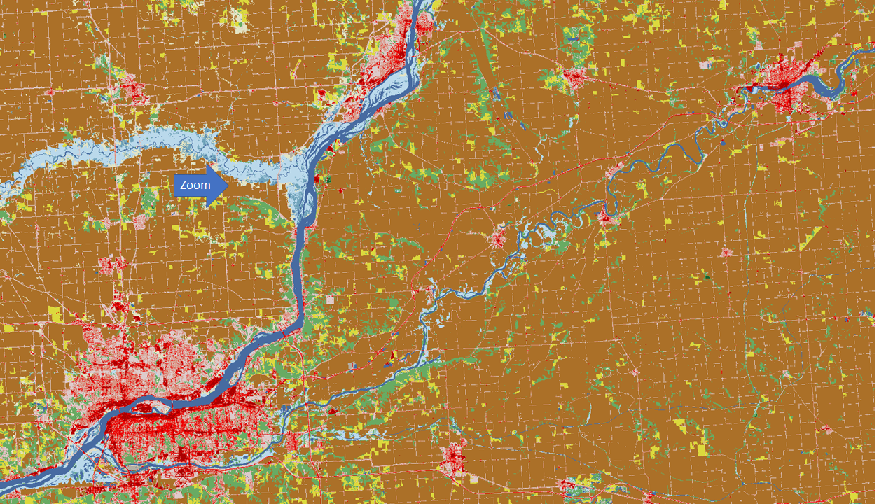
2 NLCD Zoomed 2
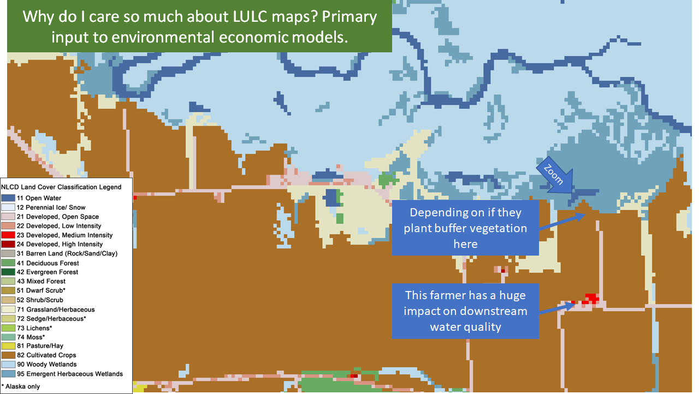
2.1 NLCD Zoomed 3
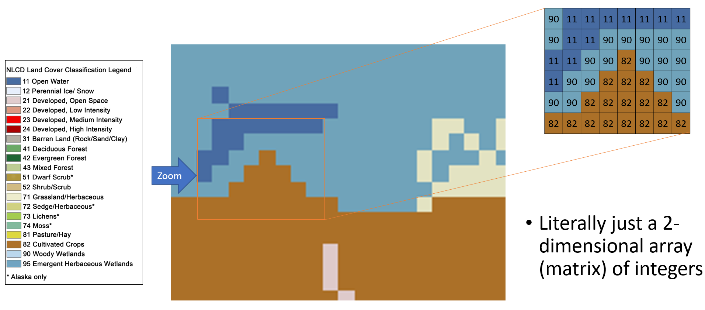
3 How does this connect to econometrics?
3.1 1.) Lots of data, same old econometrics
When n is very large (or both n and k are)
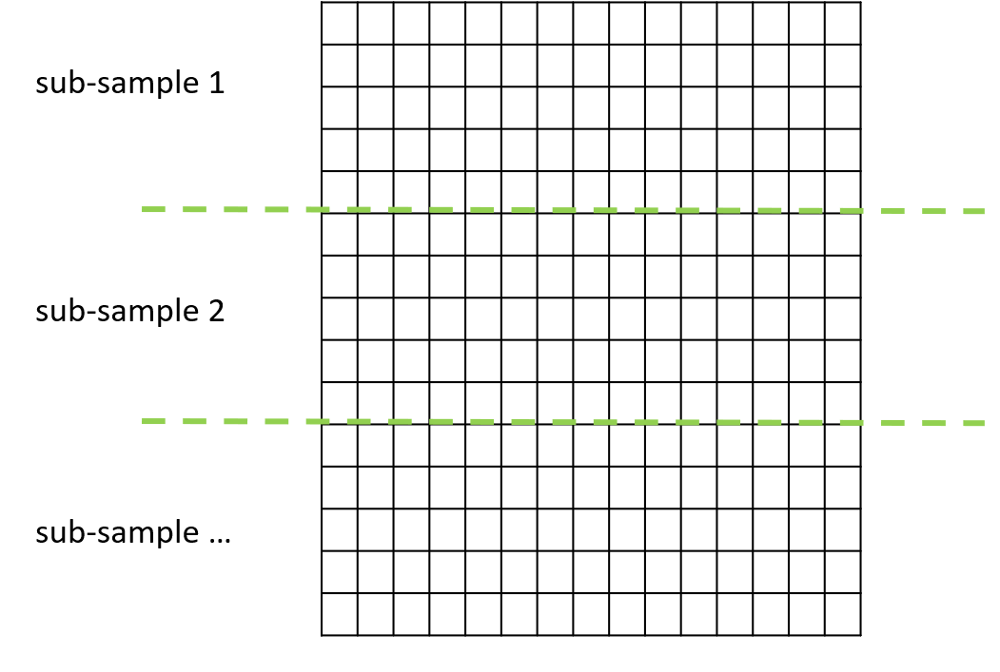
3.2 2.) New prediction approaches
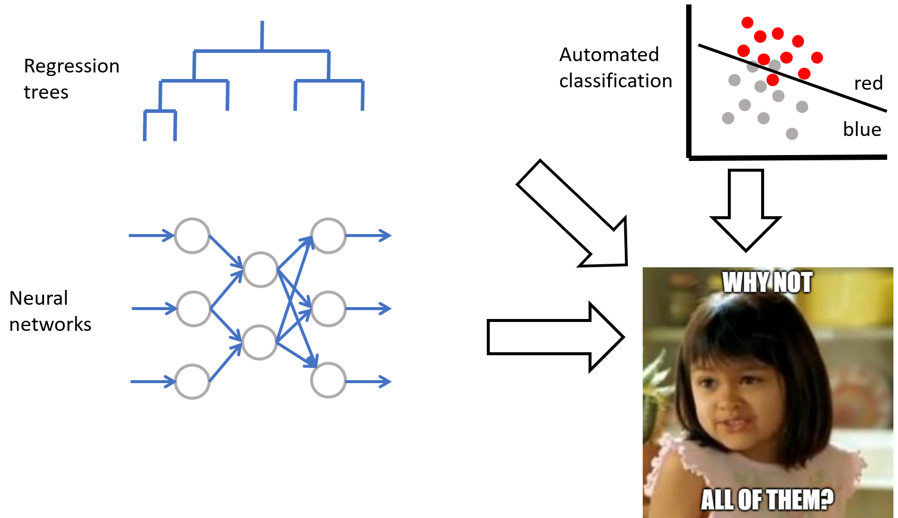
3.3 So we’ve got better models and huge data. What’s the risk?
Requires rethinking what it means to be ‘good’ at prediction.
In econometrics, we often measure our prediction quality using in-sample analysis. For example, with R2.
Normally we cheer when our p-values are tiny.
With big data, our p-values are (almost) ALWAYS tiny.
- Is this a good thing?
In the Python component of the course, we’re going to introduce a new metric of prediction quality.
Out-of-sample prediction quality through cross-validation.
Has been around forever of course, but big data greatly improves opportunities our ability to do cross-validation.
3.4 Big Data improves opportunities for cross-validation
Cross-validation splitting and folding:
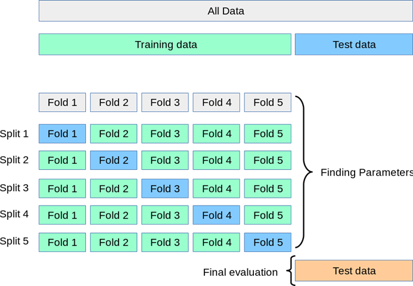
We’ll learn this soon.
3.5 Model complexity
With big data, you can make your model very, very complex
What is the risk of this?
- Prediction error out of sample _ _ gets worse
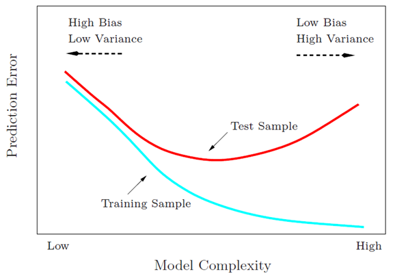
3.6 Another term: overfitting vs underfitting
Overfitting a model: making the model overly complex to that accuracy falls on the test data.
- We will talk about ways to methodologically hit the “sweet spot” of model complexity.
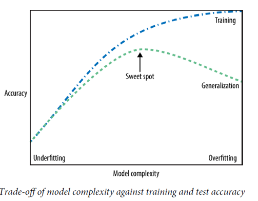
3.7 Criticism of Big Data
Predicting the world with big data means we’re focused (obsessed?) by how the world was in the past (or at best, present)
Embeds racism, sexism, etc.
Enables algorithmic discrimination
Big data: not actually new -- just bigger.